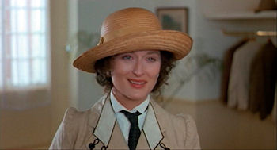
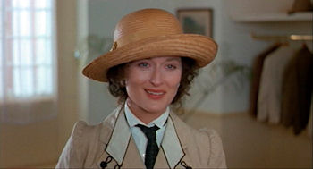

Zo begint het verhaal over de plantage in Kenia waar Karen Blixen woonde en werkte in de laatste jaren van het Europese kolonialisme. Op de plantage wordt koffie verbouwd. De verteller van het verhaal, de ik-persoon, is een Deense vrouw, Barones Karen Blixen. Ze emigreert in 1914 naar Kenia met haar echtgenoot Bror von Blixen - Finecke. Haar beste vriend in Afrika is Denys Finch - Hatton…
De koffieoogsten mislukken en de schulden lopen op. Ze is gedwongen om de plantage te verkopen en zal naar Denemarken moeten terugkeren. Net nadat de plantage is verkocht, krijgt Karen het bericht dat Denys is omgekomen bij >een vliegtuigongeluk. Zijn toestel is bij Nairobi neergestort. Zij zoekt een plek uit om hem te begraven: in het Ngong gebergte, op een plek waar je over de laagvlakte uit kunt kijken. Zij hoort later dat er regelmatig twee leeuwen op het graf van Denys komen zitten.
Als ik een lied van Afrika ken - zo peinsde ik - van de giraffe en van de Afrikaanse nieuwe maan, van de ploegen in het veld en de bezwete gezichten van de koffieplukkers, kent Afrika dan ook een lied van mij?

Out of Africa werd in 1985 verfilmd door regisseur Sydney Pollack met in de hoofdrollen Meryl Streep (Karen Blixen), Robert Redford (Denys Finch-Hatton) en Klaus Maria Brandauer (baron Blixen). De film begint met de beroemde eerste zin uit het boek: "I had a farm in Africa". Voor het verhaal in de film is ook geput uit andere boeken van Blixen, met name de verhalen Shadows on the grass en uit autobiografische gegevens van Karen Blixen. De film won zeven Oscars, waaronder die voor beste regie en beste film. De film viel veel vaker in de prijzen en kreeg onder meer drie Bafta Film Awards en drie Golden Globes.
 
